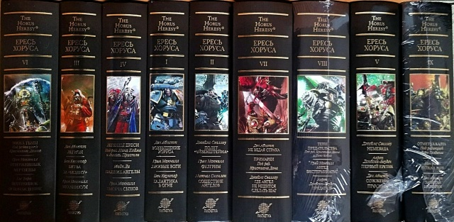

Общее описание цикла
«Ересь Хоруса» - это многотомная книжная серия, являющаяся центральным событием вселенной Warhammer 40000. Цикл рассказывает о масштабной гражданской войне, которая разрушила золотой век Империума Человечества и предопределила мрачное будущее всего человечества. Серия включает более 60 основных книг, множество рассказов и дополнительных материалов.
События цикла разворачиваются за 10 тысяч лет до основного сеттинга Warhammer 40000, во время Великого Крестового Похода, когда Император Человечества объединял разрозненные человеческие миры под знаменем Империума.
